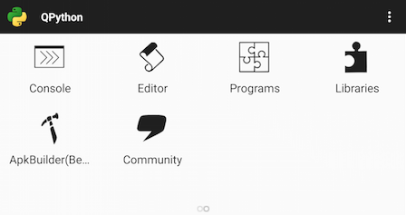

相比于常见的 WebApp 方案， QPython 的 WebApp 方案有以下优势：
- 强大的Python解析器 能在本地进行各种复杂运算和处理工作
- 海量的Python世界的第三方库 允许你使用各种姿势开发
- 灵活的开发集成环境 无需搭建环境，开发到导出Apk，都可以在QPython上完成
- 集成 SL4A 安卓的精彩特性不错过

图 - QPython 开发面板
QPython 默认集成了
Bottle ，当然也可以使用其他的如Django, Flask 框架
(可用 pip_client.py 安装)
此外，QPython 导出的APK也会默认集成
JQuery 和
Bootstrap3。
接下来，我们就开始讲 PyConChina 这个应用是怎么用 QPython 做出来的。
<< 返回目录
下一章（为何用QPython） >>